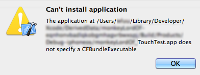

Appcelerator Test CLI Reference
Introduction
The appcelerator-test command-line interface utility prepares your project or your compiled package to use the Appcelerator Test.
Requirements
The appcelerator-test CLI requires Java 1.6 SE or greater.
For Android projects, the project must support either an Eclipse or Ant build process.
Setup the Utility
Download the appcelerator-test utility from the Dashboard. Once the download completes, unpack the file to a common location. You will need to use this utility to enable Appcelerator Test for each of your applications.
Dynamic vs Static Instrumentation
The appcelerator-test utility supports two instrumentation methods–static and dynamic–and hence, two different build processes.
Dynamic instrumentation prepares a compiled file, that is, an APK file for Android, or an APP bundle or IPA file for iOS, to use Appcelerator Test. This method requires that you compile your project first to create a package, then it can be instrumented with the appcelerator-test utility.
-
Build your project to create a compiled package.
-
Run the appcelerator-test utility against the package.
-
Install the package to your application.
-
Start the TouchTest agent on the device.
-
Start recording or playing test clips from the Dashboard.
Static instrumentation prepares an Android Eclipse or Xcode project to use Appcelerator Test. Run the appcelerator-test utility against the project. For Android Eclipse projects, the utility installs extra libraries and modifies the project's AndroidManifest.xml file. For Xcode projects, the utility creates a new target with an -TouchTest suffix, installs an extra library and modifies the project's project.pbxproj and Info.plist files.
-
Run the appcelerator-test utility against the project.
-
Build the project, targeting either a simulator, emulator or device or create a package. For Xcode projects, select the project with the -TouchTest suffix from the Scheme drop-down.
-
Install the package if needed.
-
Start the TouchTest agent on the device.
-
Start recording or playing test clips from the Dashboard.
Examples
Static Instrumentation
Android Project
The following example prepares an Eclipse project to use Appcelerator Test using static instrumentation:
java -jar appcelerator-test.jar -project ~/Documents/Eclipse_Workspace/SampleProject/ -appkey "11111111-2222-3333-4444-555555555555" -dashboardurl https://platform.appcelerator.com -username user@appcelerator.com -password secretiOS Project
The following example prepares an Xcode project to use Appcelerator Test using static instrumentation:
java -jar appcelerator-test.jar -project ~/Documents/Xcode_Workspace/SampleProject/SampleProject.xcodeproj/ -target SampleProject -appkey "11111111-2222-3333-4444-555555555555" -dashboardurl https://platform.appcelerator.com -username user@appcelerator.com -password secret -useforceloadlinkerflag -removelibraryfrombuildphaseWhen building a project to run with Appcelerator Test, in Xcode, select the project with the -TouchTest suffix from the Scheme drop-down.
Dynamic Instrumentation
APK File
The following example prepares an APK file to use Appcelerator Test using dynamic instrumentation. If needed, add the keystore options.
java -jar appcelerator-test.jar -apk ~/Documents/Eclipse_Workspace/SampleProject/SampleProject.apk -androidsdk ~/opts/android-sdk/ -appkey "11111111-2222-3333-4444-555555555555" -dashboardurl https://platform.appcelerator.com -username user@appcelerator.com -password secretIPA File
The following example prepares an IPA file to use Appcelerator Test using dynamic instrumentation. You may not need the -provisioningprofile or -signingidentity options.
java -jar appcelerator-test.jar -ipa ~/Documents/Xcode_Workspace/SampleProject.ipa -provisioningprofile ~/Downloads/BluthCo.mobileprovision -signingidentity "iPhone Distribution: Joe User (XX1111XXXX)" -appkey "11111111-2222-3333-4444-555555555555" -dashboardurl https://platform.appcelerator.com -username user@appcelerator.com -password secretOptions
Required Options
The following options are required to use the appcelerator-test CLI, plus either -project, -apk, -appbundle or -ipa.
|
Option |
Description |
|
-appkey <APP_GUID> |
Application GUID. |
|
-dashboardurl <DASHBOARD_URL> |
Dashboard URL, for example, "https://platform.axway.com". |
|
-password <APPC_PASSWORD> |
AMPLIFY Appcelerator Service password. |
|
-username <APPC_USERNAME> |
AMPLIFY Appcelerator Service user name, for example, "user@appcelerator.com". |
Project Options
The following options prepare an Eclipse or Xcode project to use Appcelerator Test.
|
Option |
Description |
|
-project <PATH_TO_PROJECT> |
Required. The path to the project. For iOS, include the <ProjectName>.xcodeproj folder. |
|
-target <TARGET_NAME> |
Required for iOS. Name of the target project (iOS only). Xcode projects usually contain more than one target. |
APK File Options
The following options prepare an APK file to use Appcelerator Test.
|
Option |
Description |
|
-androidsdk <PATH_TO_ANDROID_SDK> |
Required. The path to the Android SDK that compiled the APK file. |
|
-apk <APK_FILE> |
Required. APK file with the path. |
|
-keystore <KEYSTORE> |
Keystore, with the path, which will be used to sign the APK file. |
|
-storepass <KEYSTORE_PASSWORD> |
Password of the keystore which will be used to sign the APK file. |
|
-keypass <PRIVATE_KEY_PASSWORD> |
Password of the private key (if different from the keystore password) which will be used to sign the APK file. |
|
-alias <ALIAS_NAME> |
Alias for the key which will be used to sign the APK file. Only the first 8 characters of the alias are used. |
APP or IPA File Options
The following options prepare an APP bundle or IPA file to use Appcelerator Test. Use either the -appbundle or the -ipa option, but not both simultaneously.
|
Option |
Descriptions |
|
-appbundle <APP_FILE> |
APP bundle with the path. |
|
-ipa <IPA_FILE> |
IPA file with the path. |
|
-provisioningprofile <PROVISIONING_PROFILE> |
Provisioning profile, with the path, to be used for building IPA file. The provisioning profile you input MUST be a Distribution profile. |
|
-signingidentity <SIGNING_IDENTITY_NAME> |
Name of the signing identity to be used for code signing the application, for example, "iOS Distribution: Developer Name". |
|
-entitlementsfile <ENTITLEMENTS_FILE> |
Entitlements file, with the path, to be used for code signing the application. |
Other Options
The following parameters are optional.
|
Option |
Description |
|
-infoplistfile <INFO_PLIST_FILE> |
Xcode project's Info.plist file with a path (iOS only). If this parameter is not included, the utility will try to automatically locate it. |
|
-customrulesfile <CUSTOM_RULES_FILE> |
Android project's custom_rules.xml file with a path (Android only). If this parameter is not included, the utility will try to automatically locate it. |
|
-launchurl <APP_NAME>://<PARAMETERS> |
Launch URL to start the app (Android only). Avoid spaces and underscores. If this parameter is not included, the utility will try to automatically locate it. Example: "my-app://launch" |
|
-appobjectname <APP_OBJECT_NAME> |
Name of the Mobile App object created in the Appcelerator Test server. By default, the name is <APP_NAME>_<APP_GUID>. |
|
-donotcreateapp |
Do not create a Mobile App object in the Appcelerator Test server. |
|
-universalapp |
Create a Mobile App object compatible with both iOS and Android. |
|
-overwriteapp |
Replace the Mobile App object if it already exists. |
|
-previewmode |
Run in Preview mode to examine the console output for these parameters. If this option is not included, then the utility runs in full mode and the project is changed. |
|
-proxyserver <PROXY_SERVER> |
HTTP proxy server name. |
|
-proxyport <PROXY_PORT> |
HTTP proxy port number. |
|
-proxyusername <PROXY_USERNAME> |
HTTP proxy user name (if any). |
|
-proxypassword <PROXY_PASSWORD> |
HTTP proxy password (if any). |
|
-version |
Print Utility Version. |
|
-reporterrors |
The utility will automatically report errors to Appcelerator Test along with any relevant files. |
|
-donotreporterrors |
The utility will not report any errors to Appcelerator Test. |
|
-addheadersearchpath |
Add Appcelerator Test header files to "Header Search Paths" build setting (iOS only). |
|
-useforceloadlinkerflag |
Add -force_load flag to "Other Linker Flags" build setting (iOS only). |
|
-removelibraryfrombuildphase |
Prevents the library to be added to "Link Binary With Libraries" step of Build Phases (iOS only). |
Troubleshooting
Application does not Specify a CFBundleExecutable
This error can occur when installing an iOS app bundle that has been dynamically instrumented for testing after compilation.

As a workaround, you can "statically" instrument the Xcode project, compile the project, and then install the app bundle to the device. For steps on statically instrumenting an Xcode project, see the iOS Project example.
Resource Not Found
If you receive the following error:
com.appcelerator.mattwrapper.rest.RESTException: Error executing GET request! Received error code: 404{"success":false,"description":"Resource Not Found","code":404}Make sure the appkey parameter is correct.
Fails with "java.lang.OutOfMemoryError: Java heap space" when targeting an APK file
Add the -Xmx2g option to the Java command to increase the JVM heap size.
java -Xmx2g -jar appcelerator-test.jar -apk ~/Documents/Eclipse_Workspace/SampleProject/SampleProject.apk -androidsdk ~/opts/android-sdk/ -appkey "11111111-2222-3333-4444-555555555555" -dashboardurl https://platform.appcelerator.com -username user@appcelerator.com -password secret